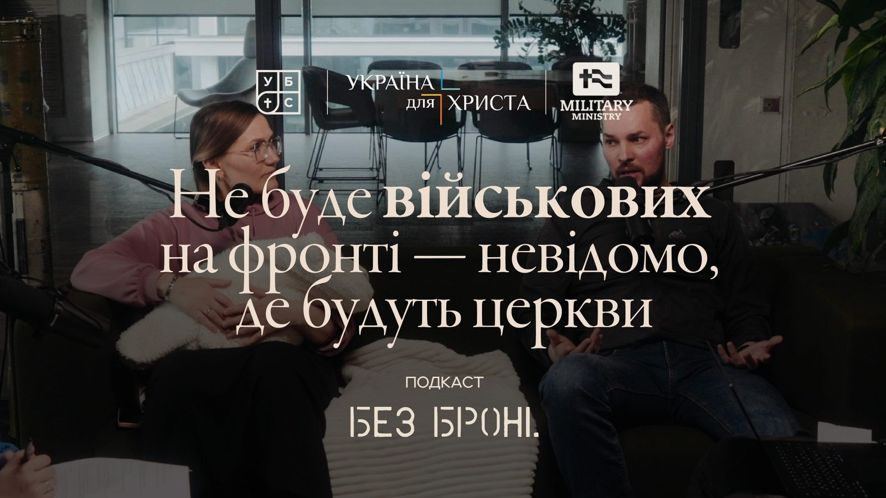

Season 1 Episode 2 ·
Vitalii and Khrystyna Moskalyk: “It's better for me to trust God”

Vitalii has been fighting since the first days of the full-scale war; Khrystyna is raising two children and leads support groups for military wives. A conversation about long-distance relationships, faith at the front, and how the church and civilians can stand alongside those in the military.
The conversation is in Ukrainian. Below is the full English text.
Nadia: Friends, welcome everyone! Today we're very happy to have the Moskalyk couple on the podcast — Khrystyna and Vitalii. And one more important guest — little Anastasia, who is only a month old. So this conversation has its own specifics: there may be pauses, and Nastia is responsible for them. Thank you for coming to us as new parents.
Vitalii has been fighting since the start of the full-scale war. He's on leave now, but soon he's going back to continue serving. Khrystyna is raising two children — little Anastasia and six-year-old Semenko — and she also organized and leads support groups for military wives. We truly value your experience and thank you for being with us today.
Who were you before the full-scale war?
Nadia: Let's start with a simple question. If we'd been talking with you before the full-scale war, how would your family have introduced itself? Who were you then — and has the war changed you?
Khrystyna: Back then I was definitely happy. And now I'm grateful. Very deeply grateful.
Vitalii: I don't even remember what it was like anymore. But there definitely wasn't any trouble. A quiet, calm life, a quiet harbor — everything's fine, everything works. There's a job, there's money, there's a place to live. You live in Lviv, where it always smells of fragrant coffee. A simple, ordinary, carefree life, I'd say.
How do you keep your relationship going at a distance?
Nadia: You've been living apart for several years now. How do you manage to keep your relationship going?
Vitalii: At first you're afraid of what it's like there. But with time it becomes like a regular job. Like each of you goes to work: there are tasks, you need to do them, plan, and so on.
Khrystyna: To answer your question — video calls and voice messages help us. We always share how our day went: at least a few photos or videos, so my husband is in the context of our life. That way we sort of include our dad and husband in our life. And when he shares his with us — we understand him. Thanks to technology we have this contact.
Vitalii: And there has to be something in common. When I see some new equipment, I always film a video for Semenko: “Son, look!” And he remembers, looks closely: “Mom, play me dad's video again.” A helicopter, tanks, other military equipment. With kids that's important. When I went to war, Semenko was two; now he's six. We spent a lot of time together when he was two, but he probably doesn't remember much.
Khrystyna: And also — remembering all the good things you've lived through together and dreaming about something good — that fills up the cup of the relationship.
Where do you draw this wisdom from?
Nadia: That sounds very wise. Where do you draw this wisdom and this outlook from? Who teaches you this? And is it easy to actually live it out?
Khrystyna: I think — from my relationship with God. He fills my soul with love. How many times He repeats: “Do not be afraid.” So into the relationships I'm in — with my husband, my child, my family, my friends — I should bring what God has filled the cup of my soul with.
And do I manage to stick to it? It's 100% a fight. The battlefield is here, in the thoughts. Whichever thought I say “yes” to right now will carry me — one way or the other. My husband is in a place that's frightening, where there's a lot of darkness, where you're sort of walking on the edge. But I understand that it's better for me to trust God and keep my course toward love and trust. That gives my heart peace: he is in God's hands just like me and our child. So it's not easy, but I trust God.
But I understand that it's better for me to trust God and keep my course toward love and trust.
How do the commander and the dad fit together?
Nadia: Khrystyna's approach amazes me — it's beyond science fiction. And a question for Vitalii: you described beautifully how you communicate and get along despite the circumstances. But how do you switch when you hang up and go back to military matters? How do the military commander and the dad, the husband, fit together in you?
Vitalii: I don't think I have two lives: here I'm a civilian and there I'm military. It's one life of mine, with different roles intertwined. And you've learned to live like that. You even saw: before the podcast I had to answer questions, someone called, we were sorting things out. It doesn't bother me.
Khrystyna and I have an agreement: usually we communicate by voice messages, video or text, but when something is very urgent — it's a call. Even when Khrystyna was going into the delivery room — I see a message, and then a call. And I'm like: “Whoa, something's happened.” Then you step away as much as you can.
My Khrystyna is very smart and wise. I understand that it's hard for her sometimes and she doesn't tell me everything. But she doesn't make it a problem or a tragedy — they're just situations that get resolved.
In general, I can't speak for everyone, but for most soldiers I talk to, the hardest thing at war is when you have problems at home. You can't leave, you've got a pile of problems both there and at home. That's why it's really good when there are parents, relatives or good friends who can handle things.
How should civilians talk to soldiers?
Nadia: Vitalii, how should civilians best communicate with soldiers? What should they write?
Vitalii: If someone isn't really interested but writes to a soldier or his wife “how are you” because they were told to at a church gathering — better to write something different: “Hi, friend, I'm praying for you. I believe, as the Bible says, that God cares for everyone.” That's it. I think that would be a bit more right.
Oleksandr: You said: don't ask “how are you.” Okay. What else is better not to ask soldiers, and what annoys you most? Because it seems that for some people “I'm praying for you” has also become something like the American “How are you?” — a phrase without content: I don't know what's going on with you, but “I'm praying for you.”
Vitalii: We're back to what we already talked about. If you don't intend to be friends with this person, to keep up a relationship — why do you need to know how they're doing? Let's just be pragmatic. If you're genuinely interested in this person — that's a different thing.
Ideally, the church would divide into teams. For example, there are ten soldiers in the church: you three pray responsibly and fervently for this one and keep in touch with him, and you three — for that one. And even write, say, once a month.
Because how do you answer “Hi, how are you?” from someone who hasn't talked to you for half a year? You yourself don't know what has happened to you in those six months: you've changed three locations, you've got a pile of stuff. What do you answer? Usually — “Hi, fine.” And then there's even offense that you answered passively: “fine.” People write to soldiers “Hi, how are you?” — as if, I wrote to you, now you write, and there'll be communication. “How are you” is essentially a closed question: “Hi. — Fine. — Cool.”
Nadia: Sounds like clear life hacks for being a good friend. Sasha, I don't remember whether you said this in a personal conversation or on a previous podcast: when your church asked people to write to soldiers, and you yourself were a soldier. Can you shed some light on that?
Oleksandr: I had that experience. A friend hosted the service a few times and said: “Here he is, write to him, ask how he's doing.” And no one wrote during that whole period. That was a contrast for me too. And even if they write “how are you” — I've just come back, I've been through so much… do I need to tell you all of it?
So I'm also impressed by Vitalii's clear instructions. But I'll also recall the previous podcast, when Roman Pikulik sat here. He said: “Okay, I won't tell you how I am, but I'll remember that you at least wrote to me.” So at least there was an attempt. There are different levels of how you can get closer, and even a message that goes unanswered is still an attempt to make contact.
What role does the church play?
Nadia: Vitalii, how do you feel, and do you sense that your wife is safer and better cared for because she's in a church? Do you see a difference between soldiers who have a church community and those who don't? Is the church important in your family's life right now?
Vitalii: The church is an important element in the life of any person — not only military but civilian too. There's a mission God left us, and the church helps carry it out. I say it's a two-way ministry: something you give to people, something people give to you, something you do together.
I'm very happy with our church. People wrote to me: “What do you need?” And you yourself don't know what you'll need. One brother was worn out asking: “Come on, give me a hint.” And then one Sunday I come to church — it was literally the last week before I left — and the church is taking up a collection purely for my military needs. For me that was: “Wow.” With that money I bought myself proper clothes for the first stretch — today I actually came in the jacket I bought back then, in 2022. That was real support. Because sometimes people buy you something you don't need, and it just lies around. But here you can buy what you really need.
Everyone should be involved in the victory — each as they can. When a person from the church goes to the front and takes on that responsibility, you can compare it to missionary work: they represent the church in the East, they hold the border so that here we can record podcasts, pray, sing, drink tasty coffee — now in the fifth year of the war. Someone pays a price for this; it doesn't come for free. And it's an opportunity and a privilege for the church — to join the mission this person is carrying out and to serve them.
Soldiers have a lot of needs, but they're not their personal needs: vehicles, motor pumps, drones. Drones aren't needed by the soldiers — they're needed by all of us, so that through the hands of soldiers we can win. Sometimes I see that in churches, ministry to the military is “one of the ministries.” Friends, it shouldn't be one of many. Because if there are no soldiers at the front, who knows where the churches will be. I'm glad that, as someone from Lviv, I can repel the enemy in the Kharkiv region and not somewhere near Ternopil, Khmelnytskyi or Lviv. Thank God, for now He's giving us the ability to hold all this.
Church teams, pastors, chaplains — that's wonderful. Our church doesn't come regularly, but my chaplain comes regularly. Most of my friends have visited me at the front: we grilled shashlyk, we sang. Usually with the chaplain — it's communion. I have a YouTube channel and a Telegram channel; I called it “About an Abnormal Life.” And when someone from normal life comes to you — you can't imagine how important that is at the front. Just talking about which cars are trending right now — a few hours of chatting with normal, non-military people about ordinary things, and it's like you're at a resort. It supports you and gives you hope. Plus they bring what you need: canned meat, tools. And people see it: “Who brought you this? — Pastors. — Wow.” That's the church's influence.
It's a biblical principle: first give the shirt, then speak the Gospel. When you've warmed a person, covered their basic needs, you already have authority and the right to tell them something. In my view, the war has opened up crazy opportunities for the church. In all the years of independent Ukraine there were never such opportunities to preach Christ. People there are thirsty, because there's trouble: everyone's afraid, because they don't know what tomorrow will bring — tomorrow something hits, and you're gone. And when church people come, they bring hope, and you can feel it. Everyone wins here: the church preaches the Kingdom of Heaven and helps the unit where its members serve.
Sometimes there's a feeling that the church is ready to help everyone, save the whole world, help all the soldiers. Friends, you don't need to help everyone. Help your own. You've got two, three, five, ten people from your church serving — take serious responsibility for them. These are our people: they fight for us, we're ready to fight for them. And believe me, when that soldier comes back, he'll remember. I remember very well who helped me. They say: when you rise, your friends find out who you are; when you fall, you find out who your friends are. I'm sure soldiers remember all the kindness civilians showed them — especially since there's not as much of it as there used to be.
Friends, you don't need to help everyone. Help your own.
Faith at the front: conversations, ministry and fear
Nadia: Vitalii, Khrystyna talked about being a light in the darkness. Did you have some pre-war vision of that? And were you often asked about spiritual things at war?
Vitalii: It's not that people specifically ask you. It just comes out in conversation. You might scold someone, you talk about something from the Bible. He starts: “I got angry at you.” I say: “You're not angry at me. It's just your heart coming out.”
I remember scolding one guy like that. He says: “I love Jesus so much, I love Jesus so much.” And we're sitting in a car. I say: “Listen, what if something hits the van right now?” He says: “I'm sure I'm going to God… Well, no, actually I haven't decided yet.” — “Then what are you waiting for? You say you love Jesus. Do you believe He can save you, that your name is written in the Book of Life? Why aren't you settling these questions?” Those are the kinds of conversations you can have. The format is like this: there's artillery shelling, a time is set — and you've got so many hours or minutes.
Nadia: Vitalii, we know that before the war you were a pastoral counselor. Did that experience come in handy at war? And if so — in helping others or yourself?
Vitalii: It came in handy 100% — in helping others. Simple example: you give a person a task. Most are ready to take it on, but some aren't. And you need to understand why. You start asking questions: what, how, why. And sometimes the problem isn't that he doesn't want to do the tasks. He has problems at home, he just doesn't want to live.
Nadia: Vitalii has already answered so many questions: about being relevant at war, about who you're raising money for. Because I notice that in society now there's more of the idea that all this is done “for the military” rather than for our safety. Not everyone can understand you — and not everyone has to. There are situations, decisions, events that remain between you and God, and no one can help you there.
Vitalii: Yes, they're painful. There's a lot of injustice, a lot of things you wish were different. But what's encouraging is that there is God, and He's greater than the pain, greater than the circumstances. Pain, confusion — they pass. In every situation — a year later. There was 2023, and now it's 2026, and Anastasia has arrived. Two or three years have passed.
At war there are lots of critical situations. Sometimes I don't know how people at war manage without God — I don't even want to imagine it. Once I caught myself thinking that you can simply drive yourself with your own thoughts into a state you don't know how to get out of: “What if it hits now. I'm going there, what if they zero in. Who knows what'll happen there.” A few thoughts — and you're already afraid, you don't want to do anything anymore. And the reality is: we see that believers die too.
But I have faith: “God, You called me here, I believe You're leading me and providing for me.” You don't take your safety into your own hands: whether I put on a good flak vest, what helmet I have, what class. You need to do that, you need good gear. But my life and my safety are in God's hands. “God, let's go into this day together, we'll see how it goes.”
Nadia: Vitalii just answers brilliantly — right into the next questions, as if he's leading us to them himself.
Support groups for military wives
Nadia: Khrystyna, tell us about the support groups you lead. Who comes — only women from church or from a wider circle? And what do you talk about: what hurts, what you work through?
Khrystyna: Thank you for this question, it's a very good one. These are wonderful women — talented, capable, and I'm very glad that life brought me together with them. They're not only church women and not only from my community — any military wife can come.
We provide a babysitter, and that's a huge relief. Only two hours once every two weeks, but there's a nanny, more than one, who spends time with the kids. It's a good time: they draw, sculpt with play-dough, play. The kids get treats, they're not hungry. And during that time we work in three directions: heart, head and hands.
Heart. Since this is where life begins, here we put in Scripture, the Word of God, topics that move us toward prayer and spiritual growth. After all, a person is spirit, soul and body. So we work on our hearts.
Head means the mind, new knowledge. These are meetings with our psychologist-consultant Nataliia Savych, and we really value this time. We talk about emotions, biochemistry, hormones, physiology: how we react to stress, how to cope with anxiety, how it can grow into worry and keep growing and how not to let that happen. How to keep a good focus.
Hands. We invite both amateurs and professionals: art therapy, bead embroidery, beadwork. Something to enjoy. And we always put meaning into it. Even when we made necklaces, each pearl had its own meaning — about gratitude.
For example, do you know how a pearl is formed? Essentially, out of pain. When a bit of debris, something irritating, gets into a shell, the mollusk wraps it in mucus — layer after layer — and that's how a pearl forms. Just imagine: out of that discomfort, that pain, such a precious treasure is born.
Guilt and the involvement of civilians
Oleksandr: You shared that you have friends who support and help. But do they feel shame or guilt that you're fighting there while they're here with their families? And do they try to make up for it somehow?
Vitalii: Well, your whole salary wouldn't be enough to cover all the needs. Once a friend wrote to me: “Listen, I'm going on vacation, I feel kind of awkward in front of you.” I said: “Friend, go and rest, even for longer. I feel your support, my guys feel your support. Why are you beating yourself up?”
Recently another friend supported the unit financially. I write to him: “Thank you so much, it's great that you're helping consciously.” And he answered, word for word: “That's why I'm not where you are — so I can work here and support people like you.” And that was: wow. That's a person's awareness. Where would guilt come from if they're involved in people's lives, in the war?
But if a person isn't involved — doesn't pray, or prays in the style of “God, bless us so the war ends, amen,” or donated 10 hryvnias — and feels themselves that they're not involved, then something will probably reproach them. But that question isn't for me or for military families. It's for those whom God has allowed to live here. Thank God, friends — live! I come back and I enjoy it: the sun is shining, Lviv is alive, kids are laughing and playing. Thank God. It means the efforts my unit and I put in at the front give people the chance to live normally here, and that makes me glad.
It's a different thing when a person dodges — through deceitful ways or corrupt schemes — the calling that circumstances are leading them to. Especially if it's a person who knows God. Then, rightly, their conscience will reproach them.
Oleksandr: And about that gradation: is it appropriate when someone tells themselves “well, I pray for the army — that's enough,” even though they could do more?
Vitalii: A person like that should be taken somewhere near Kupiansk for two days so they simply understand the reality. Why do I talk about the war so much when I come back? Because it hurts me. I want to win this war, to close this issue, so that we can all lead a quiet, peaceful life.
When it's your war — you react. But when it's not yours… Where is the war in Lviv? Friends, we've been talking here for a while, we've eaten, had coffee — where's the war, where are the strikes? There's no war in Lviv, and there's not even that kind of war in Kharkiv. Thank God for God, for good people, for the Armed Forces: in the fifth year they manage to hold the front so that the war is barely felt here. Something flies over, but it's not like March 2022, you'll agree. But we've gone a bit too far the other way: as in, everything's fine, let's just live.
When I come here, I see that we have every opportunity to have won and closed this war long ago. It'll happen when this war becomes everyone's war. Right now it turns out that the war belongs to the soldiers, their families and those connected to them: friends, parents, relatives. And to those who are aware and take part as much as they can.
In closing
Nadia: Khrystyna, which quality of your husband amazes you most? Briefly.
Khrystyna: Perseverance and courage. The courage especially sharpened with the war.
Nadia: Vitalii, I understand the list is very long, but one or two qualities: what amazes you most about your wife?
Vitalii: I think trust and faithfulness. We were just talking about this recently. Throughout the war — and this is the fourth year now — when I was going to war, my wife was essentially the only one who supported me. No hysterics, nothing like that — just: “Sweetheart, we'll manage.” And all this time, despite the war and this kind of life, despite the worries — how it'll go, what about money — such total trust. May God help us further.
Nadia: Thank you. And to finish — a nod to Andrii Khlyvniuk's line about every evening having its own name. Today on the podcast that name is the Moskalyk family. Thank you!
Vitalii: Can I add something? You didn't ask me what I pray for. Sometimes we really want — you've come home, and: “Come on, friend, leave the army and just be here for good.” But my fear is probably this: that we'll end the war in some unclear way, in a few months or a year everyone will come home, and five years pass — and: “Oops, Vitalii, we didn't finish something there, let's fight some more.” I wouldn't want that for my children. If such a difficult time has fallen to my generation, let's close the question of war. If we need to fight even for ten years — let's fight, but so that our children, grandchildren and great-grandchildren can live quietly and peacefully and reap the fruits of our labor and our right decisions. That would be right.
The text version is not a verbatim transcript: some lines have been shortened and retold in condensed form. The text was prepared with the help of AI.